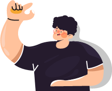
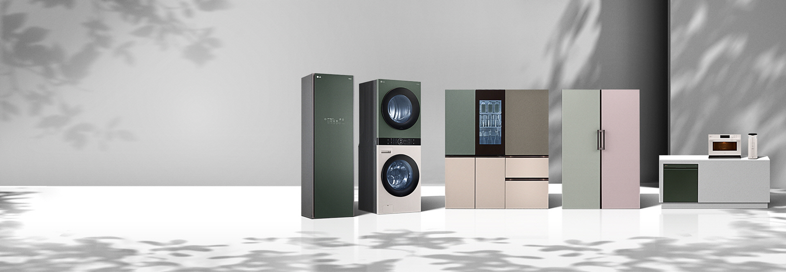

성심당 캐릭터 웹사이트
캐릭터를 활용한 브랜드 웹사이트

LG 반응형 웹사이트
두 번째 반응형 웹사이트 · 포트폴리오 상세 페이지 포함
PIXAR 반응형 웹사이트
부트스트랩 4로 구현한 반응형 웹사이트
웹 퍼블리싱 작업 모음 · 카드를 누르면 사이트가 열려요

캐릭터를 활용한 브랜드 웹사이트

두 번째 반응형 웹사이트 · 포트폴리오 상세 페이지 포함
부트스트랩 4로 구현한 반응형 웹사이트
github.com/jgyoung96